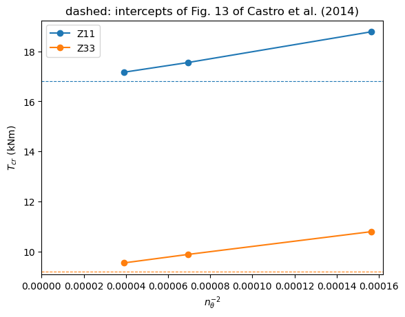
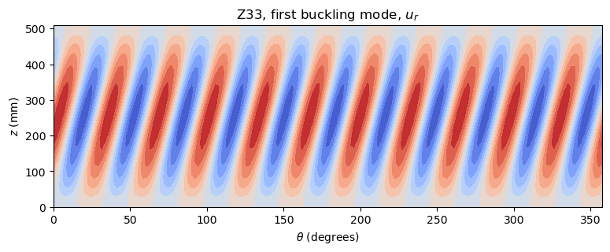

Linear buckling analysis of a cylinder under torsion#
Two torsional buckling problems of circular cylinders of Quad4 elements:
the cylinders Z11 and Z33 of Castro et al. (2014), two unsymmetric laminates, with the boundary conditions CC2 of that paper, compared with the pure-torsion intercepts of their Fig. 13;
an isotropic cylinder with simply supported edges, compared with the critical shear stress of Batdorf, Stein and Schildcrout (1947).
The membrane prestress is a uniform shear resultant given to each element with update_KG_given_stress, and the eigenvalue problem is solved with pyfe3d.solver.linear_buckling, see Linear buckling and natural frequencies. The laminate of each element is oriented by a material direction along the axis of the cylinder, see Conventions; the element is described in Quad4: assumed transverse shear strains
(MITC4). The full references are at the end of the notebook.
[1]:
%matplotlib inline
import time
import numpy as np
import matplotlib.pyplot as plt
from numpy import isclose
from scipy.sparse import coo_matrix
from pyfe3d import DOF, DOUBLE, INT, Quad4, Quad4Data, Quad4Probe
from pyfe3d.shellprop_utils import laminated_plate, isotropic_plate
from pyfe3d.solver import linear_buckling
The model#
The axis of the cylinder is the global \(z\) axis. The mesh has ntheta nearly square elements around the circumference, an odd number of nodes along the length, so that a ring of nodes lies at mid-length, and the last column of nodes is replaced by the first one to close the cylinder. The vector \((0,
0, 1)\) given to update_rotation_matrix sets the element \(x\) axis, and the material direction of the laminate, along the axis of the cylinder; the element normal points outwards. The membrane prestress in the element frame is then \((N_{xx}, N_{yy}, N_{xy}) = (0, 0, N_{xy})\), the torsion load.
The boundary conditions are constraints on the radial and circumferential displacements and rotations, whose directions change from node to node. The matrix \(\boldsymbol{T}\) below, \(\boldsymbol{u}_{global} = \boldsymbol{T} \boldsymbol{u}_{cyl}\), rotates the nodal dofs to the cylindrical directions \((u_r, u_\theta, u_z, r_r, r_\theta, r_z)\), and the matrices become \(\boldsymbol{T}^\top \boldsymbol{K} \boldsymbol{T}\):
[2]:
def cylindrical_transformation(ncoords):
theta = np.arctan2(ncoords[:, 1], ncoords[:, 0])
c = np.cos(theta)
s = np.sin(theta)
one = np.ones_like(c)
zero = np.zeros_like(c)
# columns: radial, circumferential and axial unit vectors
Q = np.array([[c, -s, zero],
[s, c, zero],
[zero, zero, one]])
rows, cols, vals = [], [], []
base = DOF*np.arange(len(theta))
for offset in (0, 3):
for i in range(3):
for j in range(3):
rows.append(base + offset + i)
cols.append(base + offset + j)
vals.append(Q[i, j])
N = DOF*len(theta)
return coo_matrix((np.concatenate(vals), (np.concatenate(rows),
np.concatenate(cols))), shape=(N, N)).tocsc()
The function below builds the cylinder of radius R and length L, assembles \(\boldsymbol{K}_{C0}\) and \(\boldsymbol{K}_G\) for the shear resultant Nxy, applies the boundary conditions bc in cylindrical coordinates and solves \((\boldsymbol{K}_{C0} + \lambda \boldsymbol{K}_G)
\boldsymbol{u} = \boldsymbol{0}\). One node at mid-length is held axially to remove the rigid axial translation. linear_buckling equilibrates the diagonal, estimates the shift of the Cayley transformation and verifies that no lower load multiplier was missed:
[3]:
def cylinder_torsion(prop, R, L, ntheta, Nxy, bc, num_eigvalues=6):
data = Quad4Data()
probe = Quad4Probe()
nlength = int(ntheta*L/(2*np.pi*R))
nlength += 1 - nlength % 2
nids = 1 + np.arange(nlength*(ntheta + 1))
nids_mesh = nids.reshape(nlength, ntheta + 1)
nids_mesh[:, -1] = nids_mesh[:, 0]
nids = np.unique(nids_mesh)
nid_pos = dict(zip(nids, np.arange(len(nids))))
zlin = np.linspace(0, L, nlength)
thetalin = np.linspace(0, 2*np.pi, ntheta + 1)[:-1][::-1]
zmesh, thetamesh = np.meshgrid(zlin, thetalin)
zmesh = zmesh.T
thetamesh = thetamesh.T
ncoords = np.vstack(((np.cos(thetamesh)*R).flatten(),
(np.sin(thetamesh)*R).flatten(),
zmesh.flatten())).T
ncoords_flatten = ncoords.flatten()
z = ncoords[:, 2]
n1s = nids_mesh[:-1, :-1].flatten()
n2s = nids_mesh[1:, :-1].flatten()
n3s = nids_mesh[1:, 1:].flatten()
n4s = nids_mesh[:-1, 1:].flatten()
num_elements = len(n1s)
N = DOF*nlength*ntheta
KC0r = np.zeros(data.KC0_SPARSE_SIZE*num_elements, dtype=INT)
KC0c = np.zeros(data.KC0_SPARSE_SIZE*num_elements, dtype=INT)
KC0v = np.zeros(data.KC0_SPARSE_SIZE*num_elements, dtype=DOUBLE)
KGr = np.zeros(data.KG_SPARSE_SIZE*num_elements, dtype=INT)
KGc = np.zeros(data.KG_SPARSE_SIZE*num_elements, dtype=INT)
KGv = np.zeros(data.KG_SPARSE_SIZE*num_elements, dtype=DOUBLE)
for k, (n1, n2, n3, n4) in enumerate(zip(n1s, n2s, n3s, n4s)):
quad = Quad4(probe)
quad.n1, quad.n2, quad.n3, quad.n4 = n1, n2, n3, n4
quad.c1 = DOF*nid_pos[n1]
quad.c2 = DOF*nid_pos[n2]
quad.c3 = DOF*nid_pos[n3]
quad.c4 = DOF*nid_pos[n4]
quad.init_k_KC0 = k*data.KC0_SPARSE_SIZE
quad.init_k_KG = k*data.KG_SPARSE_SIZE
quad.update_rotation_matrix(ncoords_flatten, 0., 0., 1.)
quad.update_probe_xe(ncoords_flatten)
quad.update_KC0(KC0r, KC0c, KC0v, prop)
quad.update_KG_given_stress(0, 0, Nxy, KGr, KGc, KGv)
KC0 = coo_matrix((KC0v, (KC0r, KC0c)), shape=(N, N)).tocsc()
KG = coo_matrix((KGv, (KGr, KGc)), shape=(N, N)).tocsc()
T = cylindrical_transformation(ncoords)
KC0 = (T.T @ KC0 @ T).tocsc()
KG = (T.T @ KG @ T).tocsc()
bk = np.zeros(N, dtype=bool)
edges = isclose(z, 0) | isclose(z, L)
for i in bc:
bk[i::DOF][edges] = True
middle = np.where(isclose(z, L/2))[0]
bk[2::DOF][middle[0]] = True
bu = ~bk
eigvals, eigvecsu = linear_buckling(KC0[bu, :][:, bu], KG[bu, :][:, bu],
num_eigvalues=num_eigvalues, tol=1e-9)
eigvecs = np.zeros((N, num_eigvalues))
eigvecs[bu] = eigvecsu
return dict(eigvals=eigvals, eigvecs=eigvecs, num_elements=num_elements,
thetamesh=thetamesh, zmesh=zmesh)
1. Laminated cylinders Z11 and Z33#
The geometry, \(R = 250\) mm, \(H = 510\) mm and the ply thickness 0.125 mm, and the stacking sequences, from inwards to outwards, are those of Table 4 of Castro et al. (2014, p. 307), the material Geier1997 that of their Table 3, and the shear correction factor 5/6 that of their Sec. 6, which laminated_plate(..., shear_correction='constant') applies. The element normal points outwards, so the plies are listed from the bottom to the top of the laminate:
[4]:
R = 0.250 # m
L = 0.510 # m
stacks = {
'Z11': [+60, -60, 0, 0, +68, -68, +52, -52, +37, -37],
'Z33': [0, 0, 19, -19, 37, -37, 45, -45, 51, -51],
}
# Geier1997, Table 3 of Castro et al. (2014)
E11, E22, nu12 = 123.55e9, 8.708e9, 0.319
G12, G13, G23 = 5.695e9, 5.695e9, 3.400e9
plyt = 0.125e-3
laminaprop = (E11, E22, nu12, G12, G13, G23)
props = {cyl: laminated_plate(stack=stack, plyt=plyt, laminaprop=laminaprop,
shear_correction='constant')
for cyl, stack in stacks.items()}
Boundary conditions and load#
The boundary condition CC2 of Table 1 of Castro et al. (2014, p. 304) is \(v = w = w_{,x} = 0\) at both edges, with the axial displacement \(u\) free: the radial and circumferential translations and the rotation about the circumferential direction are held, dofs 0, 1 and 4 in cylindrical coordinates.
The torque is \(T = -2 \pi R^2 N_{x\theta}\), Eq. (13) of the paper (p. 305): in their Fig. 1 a positive torque gives a negative shear resultant. The sign matters, because it changes the buckling load of an unsymmetric laminate. A reference \(N_{xy} = -1000/(2 \pi R)\) N/m is applied, and the critical torque is \(T_{cr} = -\lambda_1 N_{xy} 2 \pi R^2\).
The reference values#
The paper does not tabulate the torsional buckling load. The references are the intercepts with the zero axial load axis, i.e. pure torsion, of the FSDT-BC2 curves of its Fig. 13 (p. 311, combined torsion and axial compression, CC2), read off the figure to about 0.1 kNm: \(T = +16.8\) kNm for Z11 and \(+9.2\) kNm for Z33 (the negative torques, \(-15.8\) and \(-9.5\) kNm, differ because the laminates are unsymmetric). These curves come from the semi-analytical model of the paper, with the first-order shear deformation theory.
Convergence#
The torsional buckling loads come in close pairs, so six load multipliers are requested: with fewer, the eigensolver may miss members of these clusters, which the verification of linear_buckling would report as an error:
[5]:
T_ref = {'Z11': 16.8e3, 'Z33': 9.2e3}
Nxy = -1000/(2*np.pi*R)
CC2 = (0, 1, 4)
NTHETA_LAMINATES = [80, 120, 160]
conv_lam = {cyl: [] for cyl in stacks}
print('%-4s %6s %8s %12s %12s %10s %8s' % ('cyl.', 'ntheta', 'elements',
'T_cr (Nm)', 'Fig. 13', 'rel. diff.', 'time'))
for cyl in stacks:
for ntheta in NTHETA_LAMINATES:
t0 = time.time()
res_lam = cylinder_torsion(props[cyl], R, L, ntheta, Nxy, CC2)
Tcr = -res_lam['eigvals'][0]*Nxy*2*np.pi*R**2
conv_lam[cyl].append((ntheta, Tcr))
print('%-4s %6d %8d %12.1f %12.1f %10.3f %7.0fs'
% (cyl, ntheta, res_lam['num_elements'], Tcr, T_ref[cyl],
Tcr/T_ref[cyl] - 1, time.time() - t0))
print('load multipliers of the finest mesh:', res_lam['eigvals'])
cyl. ntheta elements T_cr (Nm) Fig. 13 rel. diff. time
Z11 80 1920 18775.3 16800.0 0.118 6s
Z11 120 4560 17549.9 16800.0 0.045 18s
Z11 160 8000 17162.8 16800.0 0.022 38s
load multipliers of the finest mesh: [68.65123648 68.65123648 70.06778722 70.06778722 71.30042041 71.30042041]
Z33 80 1920 10791.0 9200.0 0.173 6s
Z33 120 4560 9882.6 9200.0 0.074 19s
Z33 160 8000 9544.5 9200.0 0.037 39s
load multipliers of the finest mesh: [38.17802953 38.17802953 38.39505825 38.39505825 39.35266953 39.35266953]
The element converges from above, approximately as the square of the element size. Extrapolating with \(T_{cr}(n_\theta) = T_\infty + c\, n_\theta^{-2}\), fitted to the two finest meshes:
[6]:
print('%-4s %16s %12s %10s' % ('cyl.', 'T_inf (Nm)', 'Fig. 13', 'rel. diff.'))
for cyl, values in conv_lam.items():
(n1, T1), (n2, T2) = values[-2:]
c = (T1 - T2)/(n1**-2. - n2**-2.)
T_inf = T2 - c*n2**-2.
print('%-4s %16.1f %12.1f %10.3f' % (cyl, T_inf, T_ref[cyl],
T_inf/T_ref[cyl] - 1))
fig, ax = plt.subplots()
for cyl, values in conv_lam.items():
ntheta, Tcr = np.array(values).T
ax.plot(ntheta**-2., Tcr/1e3, 'o-', label=cyl)
ax.axhline(T_ref[cyl]/1e3, ls='--', color=ax.lines[-1].get_color(), lw=0.8)
ax.set_xlim(left=0)
ax.set_xlabel(r'$n_\theta^{-2}$')
ax.set_ylabel(r'$T_{cr}$ (kNm)')
ax.set_title('dashed: intercepts of Fig. 13 of Castro et al. (2014)')
ax.legend()
plt.show()
cyl. T_inf (Nm) Fig. 13 rel. diff.
Z11 16665.2 16800.0 -0.008
Z33 9109.8 9200.0 -0.010

The extrapolated torques are within about 1 % of the values read off the figure, which is the precision with which the figure can be read.
Buckling mode#
The radial displacement of the first mode of Z33, on the finest mesh, on the unrolled surface: inclined buckles crossing the whole length, the pattern of torsional buckling:
[7]:
ur = res_lam['eigvecs'][0::DOF, 0].reshape(res_lam['zmesh'].shape)
fig, ax = plt.subplots(figsize=(9, 3))
ax.contourf(np.degrees(res_lam['thetamesh']), res_lam['zmesh']*1e3, ur,
levels=12, cmap='coolwarm')
ax.set_xlabel(r'$\theta$ (degrees)')
ax.set_ylabel('$z$ (mm)')
ax.set_title('Z33, first buckling mode, $u_r$')
plt.show()

2. Isotropic cylinder#
An isotropic cylinder with \(R = 250\) mm, \(L = 4 R\), \(t = 4\) mm, \(E = 70\) GPa and \(\nu = 0.3\). Its simply supported edges, those of Batdorf et al. (1947, p. 8), are \(w = w_{,xx} = v = 0\) with \(u\) unrestrained: only the radial and circumferential translations are held, dofs 0 and 1 in cylindrical coordinates. The critical shear stress of Batdorf, Stein and Schildcrout (1947, p. 3) is
the straight-line approximation of their Galerkin solution, valid for \(100 < Z < 10 R^2/t^2\) (p. 4); with the correlation factor set to one it is Eq. (25) of NASA SP-8007 (1968, Sec. 4.2.4, p. 11). The critical shear resultant is \(N_{xy,cr} = \tau_{cr} t\); with the reference \(N_{xy} = -1\) N/m the load multiplier is \(N_{xy,cr}\) in N/m:
[8]:
Ei, nui = 70.e9, 0.3
Ri = 0.250
Li = 4*Ri
ti = 0.004
Di = Ei*ti**3/(12*(1 - nui**2))
Z = Li**2/(Ri*ti)*np.sqrt(1 - nui**2)
k_s = 0.85*Z**0.75
Nxy_ref = k_s*np.pi**2*Di/Li**2
print('Z = %.1f (validity: 100 < Z < %.0f), k_s = %.2f, N_xy,cr = %.1f N/m'
% (Z, 10*Ri**2/ti**2, k_s, Nxy_ref))
Z = 953.9 (validity: 100 < Z < 39062), k_s = 145.90, N_xy,cr = 590764.7 N/m
[9]:
prop_iso = isotropic_plate(thickness=ti, E=Ei, nu=nui)
NTHETA_ISOTROPIC = [64, 96, 128]
print('%6s %8s %14s %14s %10s %8s' % ('ntheta', 'elements', 'N_xy,cr (N/m)',
'Batdorf', 'rel. diff.', 'time'))
for ntheta in NTHETA_ISOTROPIC:
t0 = time.time()
res_iso = cylinder_torsion(prop_iso, Ri, Li, ntheta, -1., (0, 1),
num_eigvalues=4)
Ncr = res_iso['eigvals'][0]
print('%6d %8d %14.1f %14.1f %10.3f %7.0fs'
% (ntheta, res_iso['num_elements'], Ncr, Nxy_ref, Ncr/Nxy_ref - 1,
time.time() - t0))
ntheta elements N_xy,cr (N/m) Batdorf rel. diff. time
64 2560 613634.3 590764.7 0.039 10s
96 5760 595504.0 590764.7 0.008 34s
128 10240 589342.8 590764.7 -0.002 73s
Here \(Z = 954\), and the element converges to slightly below the formula. The formula is a straight-line fit of Batdorf’s Galerkin solution of a Donnell-type equation: Table 1, p. 20, of the same report gives \(k_s = 153.0\) at \(Z = 1000\) in the second approximation, 1.2 % above the 151.2 of the straight line, so a difference of the order of 1 % is within the accuracy of the formula itself.
References#
Batdorf, S. B., Stein, M. and Schildcrout, M., Critical stress of thin-walled cylinders in torsion, NACA TN 1344, 1947.
Castro, S. G. P., Mittelstedt, C., Monteiro, F. A. C., Arbelo, M. A., Ziegmann, G. and Degenhardt, R., Linear buckling predictions of unstiffened laminated composite cylinders and cones under various loading and boundary conditions using semi-analytical models, Composite Structures, 118, 303-315, 2014. https://doi.org/10.1016/j.compstruct.2014.07.037
NASA SP-8007, Buckling of thin-walled circular cylinders, 1965, revised